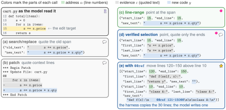
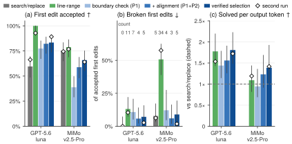

Fit, not format.重在契合，不在格式。
A coding agent changes code by telling its harness where an edit goes: it points at line numbers, or it quotes the code. That choice decides what the agent loop pays, and which errors anyone ever sees. 编程智能体改代码时，要告诉 harness 改在哪里：要么指行号，要么把原文引出来。这个选择决定了 agent 循环要付出多少代价，也决定了哪些错误能被看见。
1Carnegie Mellon University 2Princeton University 3McGill University 4Mila – Quebec AI Institute 5Columbia University *corresponding通讯作者
Same tasks solved, very different first tries
解出的任务一样多，第一次尝试却天差地别
On large-file refactors, GPT-5.6-luna's first edit is accepted in 99% of runs when it points at the lines to change, and in 58% when it quotes them. Both ways solve 94.4% of the tasks.
在大文件重构上，GPT-5.6-luna 指行号时首次编辑的接受率是 99%，引原文时只有 58%。可两种写法解出的任务都是 94.4%。
We put six models through three code-editing benchmarks, more than 4,700 runs, in one harness where only the edit interface changes. The same pattern shows up everywhere: the first action swings widely between interfaces, and the final outcome barely moves.
我们在同一个 harness 里只改变编辑接口，让六个模型跑了三个代码编辑基准，共 4,700 多次运行。到处都是同一个规律：第一步动作随接口大起大落，最终结果却几乎不动。
Switch to task solved and the three interfaces fall into line. Paper Table 1, first run.
切到“任务解出”，三种接口几乎挤到了一起。数据来自论文表 1（第一轮）。
So where did the difference go?
那么，差距去哪儿了？
Success hides misfit; cost reveals it
成功率掩盖失配，成本把它暴露出来
An agent stops when the model decides it is done, not when an edit fails. A rejected edit comes back as an error the model can act on: it rereads the file, retypes the edit, and tries again. The loop absorbs the failure, and bills for every lap.
agent 什么时候停下，是模型自己判断任务完成了，而不是某次编辑失败了。被拒绝的编辑会以报错的形式回到模型手里：它重读文件、重打编辑、再试一次。循环把失败吸收掉了，但每转一圈都要付费。
On matched tasks, a run whose first targeted edit is rejected costs 1.2–1.8 times as much as one whose first edit goes through. On the refactors, GPT-5.6-luna solves 1.64 times as many tasks per output token with line ranges as with search/replace: its first line-range call is about half as long, and it rarely has to retry.
在配对的同一批任务上，首次编辑被拒的运行，花费是首次编辑一次通过的 1.2–1.8 倍。在大文件重构上，GPT-5.6-luna 用行号范围时，每个输出 token 解出的任务数是搜索替换的 1.64 倍：它第一次调用的长度只有约一半，也很少需要重试。
Quoting is checkable; pointing is cheap and silent
引原文可以核对；指行号便宜，却不出声
Every edit call carries an address (where), evidence of the target (what is there now), and the new text. Search/replace and patch quote the target, so the harness can refuse an edit that does not match the file. A line range carries no evidence at all; the harness can only check that the numbers are in range. Evidence works like a checksum on the address, and omitting it removes its cost, not the need for it.
每次编辑调用都包含三部分：地址（改哪里）、目标的证据（那里现在是什么），以及新内容。搜索替换和补丁会引出原文，所以文件对不上时 harness 可以拒绝这次编辑。行号范围不带任何证据，harness 只能检查行号有没有越界。证据就像地址的校验和：省掉它，省掉的只是成本，需要它的场合并不会因此消失。
Quoting costs output and fails visibly: doubling the quoted text raises the odds of a no-match by about a quarter. Pointing saves that output, but on large edits the two failure modes split apart.
引原文要花输出，失败时看得见：引用的原文长一倍，对不上的几率就增加约四分之一。指行号省下了这部分输出，但在大编辑上，两类失败彻底分道扬镳。
Paper Figure 6 and Appendix B, rounded. Edits that land on the wrong lines but still parse are not counted at all.
数据来自论文图 6 和附录 B（取整）。改错了位置但仍能解析的编辑，根本没被算进来。
Of the broken first line-range edits, 62% would parse if one boundary moved by a single line. A pointer is cheap, and when it misses, it misses by one. In one RefactorBench run, GPT-5.6-luna adds a parameter in four files with a single call. In celery/apps/multi.py it replaces lines 44–51, but its new text ends one line early and drops a closing parenthesis. The call is accepted, the file no longer parses, and the model is never told.
写坏的首次行号编辑里，62% 只要把一端挪动一行就能解析。行号便宜，可一旦指偏，往往就偏一行。在一次 RefactorBench 运行中，GPT-5.6-luna 用一次调用在四个文件里加了一个参数。在 celery/apps/multi.py 里它替换了第 44–51 行，但新内容少写了一行，丢了一个右括号。调用被接受了，文件已经无法解析，模型却从头到尾不知道。
Which form wins depends on the model
哪种写法更好，取决于模型
Models learn both ways of referring to code from their training data. Compilers and tracebacks print file:line; diffs quote the lines around a change. Post-training then adds the format of each developer's own harness. So fluency, how reliably a model writes a form, ends up different for every model.
模型从训练数据里学会了两种指代代码的方式：编译器和 traceback 打印 file:line，diff 则引用改动前后的原文。后训练又加上了各家开发者自己 harness 的格式。于是流利度，也就是模型写某种形式的可靠程度，每个模型都不一样。
| search/replace | patch | line range |
|---|
Small print in each cell: share of tasks solved, which barely moves. Claude Sonnet 5 has no patch arm.
每格下方的小字是任务解出率，几乎不变。Claude Sonnet 5 没有补丁这一组。
Line ranges fit GPT-5.6-luna and DeepSeek-V4-Flash, search/replace fits GLM-5.3 and MiMo-v2.5-Pro, and patch fits Qwen3.8-Flash. The model × interface interaction is overwhelming (p < 10−40), and it holds even between search/replace and line ranges, two interfaces that differ only in whether they point or quote.
行号范围最适合 GPT-5.6-luna 和 DeepSeek-V4-Flash，搜索替换最适合 GLM-5.3 和 MiMo-v2.5-Pro，补丁最适合 Qwen3.8-Flash。模型与接口的交互效应极强（p < 10−40），即便只比较搜索替换和行号范围这两种只差在“引”还是“指”的接口，结论依然成立。
And left to choose, models do not reliably pick what they write best. Given one tool that accepts all three forms, GPT-5.6-luna picks the patch format its developer trains on more than twice as often as line ranges, although on its own its first patch is accepted in 23% of runs and its first line range in 99%.
而让模型自己选时，它们并不总会挑写得最好的那种。给一个同时接受三种形式的工具，GPT-5.6-luna 选补丁（它的开发者训练所用的格式）的次数是行号范围的两倍多，可单独使用时，它的首次补丁只有 23% 被接受，首次行号范围却有 99%。
Even packaging matters: offering three named tools instead of one tool with three argument shapes raises GPT-5.6-luna's first-edit acceptance by 16 points, because it then picks line ranges more often and patches less often.
连包装方式都有影响：把“一个工具三种参数”换成“三个独立命名的工具”，GPT-5.6-luna 的首次编辑接受率提高了 16 个百分点，因为它会更多地选行号范围、更少地选补丁。
Verified selection: point, then quote just the two ends
校验选区：先指行号，再只引首尾两行
Can one interface be cheap to write, checkable by the harness, and written well by every model? Verified selection asks only for the two forms every model is fluent in, the ones natural text teaches. It points with line numbers, as diagnostics and tracebacks do, and quotes only the first and last line of the span, as diffs do. The model states its intent; the harness does the bookkeeping.
有没有一种接口，写起来便宜、harness 能核对、每个模型都写得好？校验选区只要求每个模型都流利的两种形式，也就是自然文本教会它们的那两种：像编译诊断和 traceback 那样指行号，再像 diff 那样只引出选区的首行和尾行。模型只负责说清意图，记账的事交给 harness。
Lines of output, schematic (paper §2.3 and Figure 2e): the harness copies the 30 lines it already showed the model; the model writes one.
按输出行数示意（论文 §2.3 与图 2e）：这 30 行 harness 早就给模型看过，由 harness 复制；模型只写一行。
The four call syntaxes side by side (paper Figure 2)四种调用写法对照（论文图 2）

Every run in this study uses S-Code, an open-source terminal coding-agent harness, so only the edit interface varies. Compared with plain line ranges, the model sees two extra string fields, a note on @@ref in the schema, and one paragraph of instructions. ★ Star S-Code on GitHub.
本研究的所有运行都基于开源的终端编程 agent harness S-Code，因此只有编辑接口这一个变量。相比普通的行号范围，模型看到的改动只有两个字符串字段、schema 里一条关于 @@ref 的说明，以及一段使用说明。★ 去 GitHub 给 S-Code 点个 Star。
Cheap like a pointer, checked like a quote
像指行号一样便宜，像引原文一样可核对
On the large-file refactors, over two runs, verified selection removes most of the silent breakage that bare line ranges let through.
在大文件重构上，两轮实验合计，校验选区消除了裸行号范围放过的大部分无声破坏。
Bars run from 0 to 2×. For MiMo-v2.5-Pro, bare line ranges are not significantly more efficient than search/replace, while verified selection is; compared with bare line ranges, it also raises task success (p = .002).
条形刻度从 0 到 2×。对 MiMo-v2.5-Pro，裸行号范围的效率并不显著高于搜索替换，校验选区则显著更高；与裸行号范围相比，它还提高了任务成功率（p = .002）。
The full ablation (paper Figure 8)完整消融实验（论文图 8）

What this means for harness builders
这对做 harness 的人意味着什么
Measure the loop, not only the outcome. An interface defect rarely shows up as a failed task. It shows up as tokens spent getting there. Report first-action acceptance and tasks solved per output token alongside success, within each model.
衡量整个循环，而不只是结果。接口的缺陷很少表现为任务失败，而是表现为为了做成任务多花的 token。除了成功率，还要在同一模型内报告首次动作接受率和每输出 token 解出的任务数。
Ask the model only for its intent. A model's output is the most expensive and least exact part of an edit. Ask for a pointer and the least evidence that makes it checkable, and let the harness number, check, align and copy. Those steps are exact and nearly free for a harness; output tokens are decoded one at a time, while what is already in context sits in the KV cache.
只向模型要它的意图。模型的输出是一次编辑里最贵、也最不精确的部分。只向它要一个指针，再加上让这个指针可被核对的最少证据；编号、核对、对齐、复制都交给 harness。这些步骤对 harness 来说精确又几乎免费；输出 token 却要一个一个地解码，而已经在上下文里的内容只需从 KV 缓存里读出来。
The lesson for edit interfaces is fit, not format.
编辑接口的教训就是：重在契合，不在格式。
@article{wan2026fitnotformat,
title = {Physics of Coding Agents: Part 1,
Fit, Not Format at the Edit Interface},
author = {Wan, Langlin and Liang, Zhixuan and
Wang, Guangyuan and Liu, Shilong},
journal = {Preprints},
year = {2026},
doi = {10.20944/preprints202610.1889.v1},
url = {https://www.preprints.org/manuscript/202610.1889}
}
If this was useful, a star helps.
如果对你有帮助，欢迎点个 Star。
The paper repository holds the harness changes, task lists, run logs and every analysis script. S-Code is the open-source harness every run used.
论文仓库包含 harness 改动、任务列表、运行日志和所有分析脚本。S-Code 是所有实验运行所用的开源 harness。